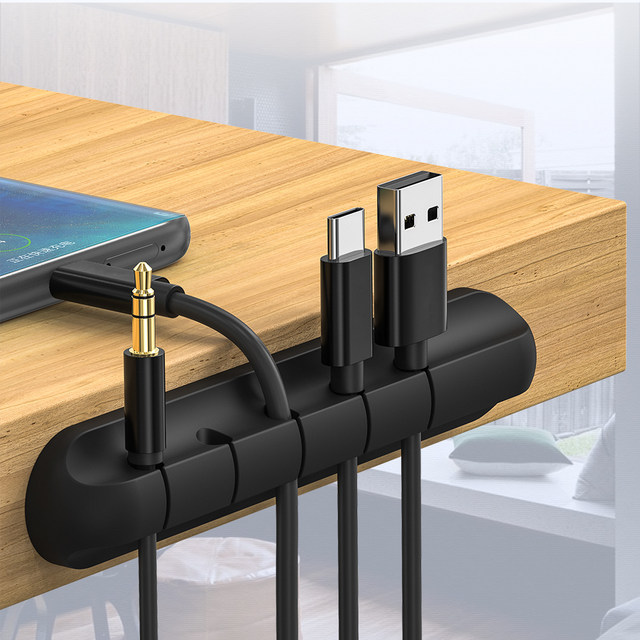
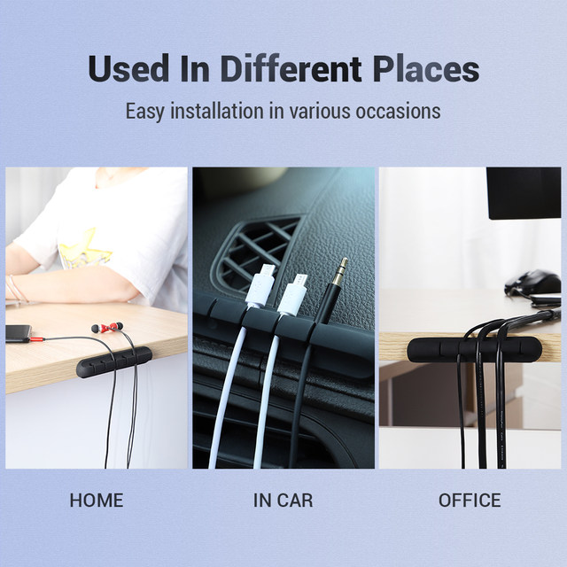
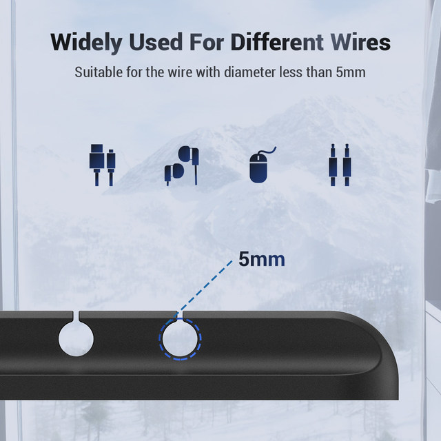
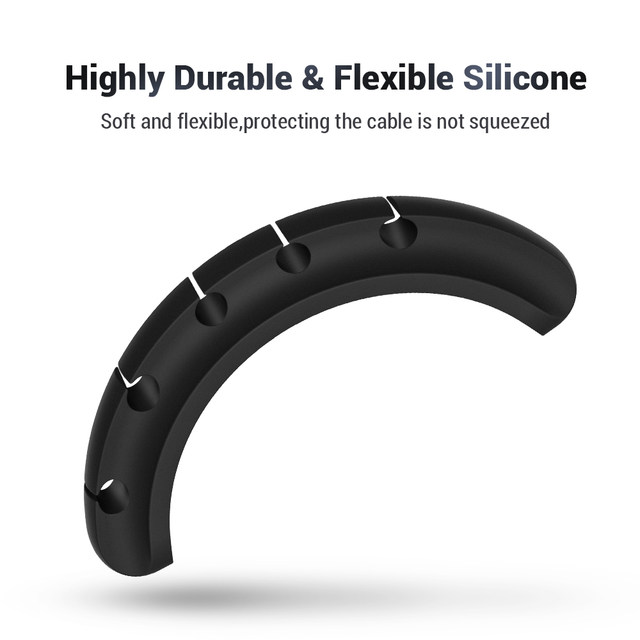
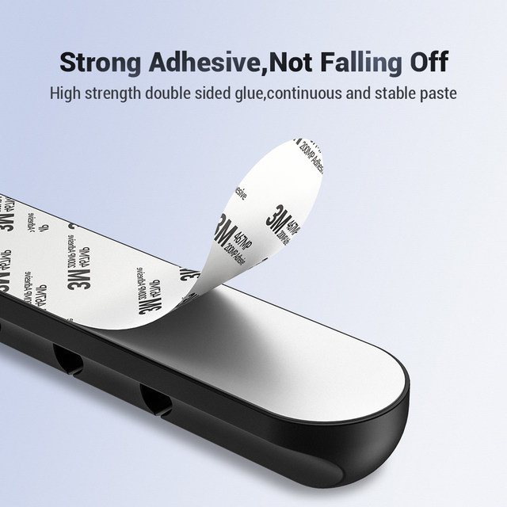

Features:
lt is easy to install in various occasions, so it canbe used in different places.
lt can be widely used for different wires
lt is suitable for desks of all materials.
lts material is highly durable and flexible siliconewhich can protect the cable is not squeezed.
Specification:
Size:116x22x17mm
Hole Diamete:5mm
Hole number:
Material:Rubber
Weight:60
Notes:
1.Manual measuring.please allow 1-3cm error, thank you.
2.Suitable for the wire with diameter less than 5mm.




